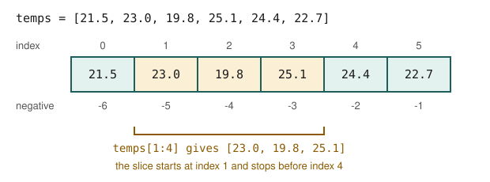

Chapter 2: Python Essentials for Data Work¶
The parts of the language that data work uses every day
Learning outcomes
After this chapter you should be able to:
- use Python's basic types (numbers, strings, booleans,
None) and know where floating-point arithmetic surprises; - store data in lists, tuples, dictionaries and sets, and choose between them;
- index and slice sequences, including negative indexes;
- write loops, conditions and comprehensions that filter and transform records;
- define functions with default arguments and use them as sort keys;
- read a small CSV text into a list of records, converting types and handling bad values;
- use a few modules of the standard library that data work relies on.
This chapter is a working tour of Python for readers who have programmed a little, in Python or in another language. It does not try to cover the whole language. It covers what you need to read and write the code in the rest of the book, with examples drawn from data work: counting, filtering, summarising, and turning raw text into records. If Python is entirely new to you, read the chapter at the keyboard and type every example.
2.1 Values, types and variables¶
Every value in Python has a type. The ones you will meet constantly are:
| Type | Example values | Used for |
|---|---|---|
int |
0, 42, -7 |
counts, indexes |
float |
3.14, -0.5, 1e6 |
measurements, averages |
str |
"Delhi", 'cups' |
text, labels, category names |
bool |
True, False |
the result of a comparison, a flag |
NoneType |
None |
"no value": missing or not yet known |
Table 2.1. Python's basic types.
A variable is a name attached to a value with =. The name has no type of its own; it simply refers to whatever value was last assigned to it.
cups = 112 # an int
price = 12.5 # a float
city = "Pune" # a str
is_weekend = False # a bool
revenue = cups * price
print(type(cups), type(price), type(city), type(is_weekend))
print("revenue:", revenue)
<class 'int'> <class 'float'> <class 'str'> <class 'bool'>
revenue: 1400.0
Arithmetic uses +, -, * and /. Division with / always gives a float. Two more operators are handy for counting: // is floor division (the whole number of times one number goes into another) and % is the remainder. ** raises to a power.
minutes = 135
print(minutes / 60) # true division
print(minutes // 60, "hours and", minutes % 60, "minutes")
print(2 ** 10)
2.25
2 hours and 15 minutes
1024
Floating-point numbers are approximations¶
A float stores a number in binary with about 15 to 17 significant decimal digits. Most decimal fractions, such as 0.1, have no exact binary form, so tiny rounding errors appear:
print(0.1 + 0.2)
print(0.1 + 0.2 == 0.3)
import math
print(math.isclose(0.1 + 0.2, 0.3))
0.30000000000000004
False
True
Caution: never test floats for exact equality
Compare floats with a tolerance, using math.isclose (or numpy.isclose for arrays, Chapter 3). The errors are tiny and do not matter for data analysis, but an == test that should be True can come out False.
Comparisons and logic¶
Comparisons (==, !=, <, <=, >, >=) produce booleans, which combine with and, or and not. None is tested with is None, not == None.
temperature = 38.4
print(temperature > 37.5 and temperature < 40)
print(37.5 < temperature < 40) # chained comparison, same meaning
reading = None
print(reading is None)
True
True
True
2.2 Strings¶
Text is everywhere in data: names, categories, codes, dates before they are parsed, whole documents. A string is a sequence of characters in single or double quotes. Strings have methods, called with a dot, that return new strings (a string itself never changes).
raw = " New Delhi "
print(repr(raw.strip())) # remove spaces at both ends
print(raw.strip().lower())
print(raw.strip().upper())
print(raw.strip().replace(" ", "_"))
print("a,b,,d".split(",")) # split on commas
print("-".join(["2024", "03", "15"]))
print("Delhi" in "New Delhi") # substring test
'New Delhi'
new delhi
NEW DELHI
New_Delhi
['a', 'b', '', 'd']
2024-03-15
True
Cleaning text columns is mostly a matter of these few methods: strip the spaces, fix the case, replace unwanted characters, split into parts. Chapter 5 applies them to whole columns at once with pandas.
f-strings¶
An f-string (a string with f before the quote) puts the values of expressions into text. A format code after a colon controls how numbers appear: .2f gives two decimals, , adds thousands separators, .1% shows a fraction as a percentage, and a number before the dot sets a minimum width.
mean_cups = 110.857142
share = 0.4231
total = 1234567
print(f"Mean cups per weekday: {mean_cups:.1f}")
print(f"Share of sales on weekends: {share:.1%}")
print(f"Total: {total:,}")
print(f"|{'left':<8}|{'right':>8}|{3.14159:>8.2f}|")
Mean cups per weekday: 110.9
Share of sales on weekends: 42.3%
Total: 1,234,567
|left | right| 3.14|
2.3 Lists and tuples¶
A list holds values in order, in square brackets. Lists can grow and shrink, and their elements can be changed. They are Python's general-purpose container for a sequence of data.
Elements are numbered from 0. A negative index counts from the end, so -1 is the last element. A slice a[start:stop] takes the elements from start up to but not including stop; either end can be left out. Figure 2.1 shows both.

temps = [21.5, 23.0, 19.8, 25.1, 24.4, 22.7]
print(temps[0], temps[-1]) # first and last
print(temps[1:4]) # indexes 1, 2, 3
print(temps[:2], temps[-2:]) # first two, last two
print(temps[::2]) # every second element
print(len(temps), min(temps), max(temps), round(sum(temps) / len(temps), 2))
21.5 22.7
[23.0, 19.8, 25.1]
[21.5, 23.0] [24.4, 22.7]
[21.5, 19.8, 24.4]
6 19.8 25.1 22.75
The half-open rule (stop is excluded) has a convenient consequence: temps[:k] and temps[k:] split the list into two parts with no overlap and nothing missing, and temps[a:b] has exactly b - a elements.
Lists are changed in place by methods such as append, extend, insert and sort, and by assigning to an index.
temps.append(20.9)
temps[2] = 19.9 # correct a reading
print(temps)
print(sorted(temps)) # a new sorted list; temps is unchanged
temps.sort(reverse=True) # sorts temps itself
print(temps)
[21.5, 23.0, 19.9, 25.1, 24.4, 22.7, 20.9]
[19.9, 20.9, 21.5, 22.7, 23.0, 24.4, 25.1]
[25.1, 24.4, 23.0, 22.7, 21.5, 20.9, 19.9]
Caution: two names, one list
Assignment does not copy a list. After b = a, both names refer to the same list, and b.append(1) changes a too. Use b = a.copy() (or list(a)) when you need an independent copy. The same is true of dictionaries, NumPy arrays and pandas tables, and it is a frequent source of puzzling bugs.
A tuple is like a list but cannot be changed after it is made. It is written with round brackets, and is the natural type for a fixed group of values that belong together, such as one record:
record = ("Mon", 112)
day, cups = record # unpacking
print(day, cups)
Mon 112
2.4 Dictionaries and sets¶
A dictionary maps keys to values. It answers "what is the value for this key?" instantly, however large it is. Keys are usually strings or numbers; values can be anything.
stock = {"tea": 40, "coffee": 25, "milk": 12}
print(stock["tea"])
stock["sugar"] = 30 # add a key
stock["milk"] -= 2 # change a value
print(stock)
print(stock.get("juice", 0)) # a default when the key is missing
print("coffee" in stock) # tests the keys
for item, qty in stock.items():
if qty < 20:
print("reorder", item)
40
{'tea': 40, 'coffee': 25, 'milk': 10, 'sugar': 30}
0
True
reorder milk
Reading a missing key with square brackets raises a KeyError; get with a default avoids it. A dictionary is the natural way to count things: go through the data, and add one to the count for each value.
orders = ["tea", "coffee", "tea", "tea", "juice", "coffee", "tea"]
counts = {}
for item in orders:
counts[item] = counts.get(item, 0) + 1
print(counts)
from collections import Counter
print(Counter(orders).most_common(2))
{'tea': 4, 'coffee': 2, 'juice': 1}
[('tea', 4), ('coffee', 2)]
collections.Counter does the same counting in one line and adds useful methods such as most_common. pandas has the same idea for columns, value_counts (Chapter 4).
A set is an unordered collection of distinct values. It removes duplicates and tests membership quickly, and it supports the operations of set theory.
cities_a = {"Pune", "Delhi", "Chennai", "Pune"}
cities_b = {"Delhi", "Kolkata"}
print(sorted(cities_a)) # the duplicate is gone
print(cities_a & cities_b) # intersection
print(sorted(cities_a | cities_b)) # union
print(sorted(cities_a - cities_b)) # in a but not in b
['Chennai', 'Delhi', 'Pune']
{'Delhi'}
['Chennai', 'Delhi', 'Kolkata', 'Pune']
['Chennai', 'Pune']
| Container | Written | Ordered | Changeable | Duplicates | Typical use |
|---|---|---|---|---|---|
| list | [1, 2, 2] |
yes | yes | allowed | a sequence of values or records |
| tuple | (1, 2, 2) |
yes | no | allowed | one fixed record |
| dict | {"a": 1} |
yes (insertion order) | yes | keys unique | lookup by key, counting |
| set | {1, 2} |
no | yes | no | distinct values, membership |
Table 2.2. Python's four built-in containers compared.
2.5 Control flow¶
if, elif and else choose between blocks of code. The blocks are marked by indentation (four spaces by convention), not by brackets.
def grade(mark):
if mark >= 75:
return "distinction"
elif mark >= 40:
return "pass"
else:
return "fail"
for m in [82, 40, 39.5]:
print(m, grade(m))
82 distinction
40 pass
39.5 fail
A for loop runs its block once for each element of a sequence. Three helpers make loops over data cleaner: range(n) gives the numbers 0 to n − 1, enumerate gives each element with its position, and zip walks through two or more sequences side by side.
days = ["Mon", "Tue", "Wed"]
cups = [112, 98, 105]
for i, day in enumerate(days, start=1):
print(i, day)
for day, c in zip(days, cups):
print(f"{day}: {c} cups")
1 Mon
2 Tue
3 Wed
Mon: 112 cups
Tue: 98 cups
Wed: 105 cups
A while loop repeats as long as a condition holds. It is less common in data work, but useful when the number of repetitions is not known in advance:
balance, years = 1000.0, 0
while balance < 2000:
balance *= 1.07 # grow by 7% a year
years += 1
print(years, "years to double, ending at", round(balance, 2))
11 years to double, ending at 2104.85
2.6 Comprehensions¶
A list comprehension builds a new list from an old one in a single expression: [expression for item in sequence if condition]. It reads almost like the sentence "the expression for each item in the sequence, if the condition holds". It is the idiomatic way to transform and filter.
temps_c = [21.5, 23.0, 19.9, 25.1, 24.4, 22.7]
temps_f = [round(t * 9 / 5 + 32, 1) for t in temps_c]
warm = [t for t in temps_c if t > 23]
print(temps_f)
print(warm)
[70.7, 73.4, 67.8, 77.2, 75.9, 72.9]
[25.1, 24.4]
The same pattern makes dictionaries and sets:
names = ["asha", "ravi", "meena"]
lengths = {n.title(): len(n) for n in names}
initials = {n[0] for n in names}
print(lengths, sorted(initials))
{'Asha': 4, 'Ravi': 4, 'Meena': 5} ['a', 'm', 'r']
Key idea
Most data processing is a pipeline of filter (keep the rows that satisfy a condition), transform (compute a new value from each row) and aggregate (combine many values into one, such as a sum or a count). A comprehension does the first two; sum, len, min, max and friends do the third. pandas does all three on whole columns, which is why Chapter 4 feels familiar after this one.
2.7 Functions¶
A function packages a computation under a name so that it can be reused and tested. It takes arguments, and return sends back a result. A string just after the def line, the docstring, says what the function does.
def summarise(values, ndigits=2):
"""Return the count, mean and range of a list of numbers."""
n = len(values)
mean = sum(values) / n
return n, round(mean, ndigits), max(values) - min(values)
n, m, r = summarise([4, 8, 15, 16, 23, 42])
print(n, m, r)
print(summarise([1, 2, 2], ndigits=4))
6 18.0 38
(3, 1.6667, 1)
ndigits=2 is a default argument: it is used when the caller does not give one. Returning several values actually returns one tuple, which the caller can unpack.
Functions are values too, so they can be passed to other functions. The commonest case in data work is a key function for sorting: sorted calls it on every element and sorts by the results. A short function can be written inline as a lambda.
people = [("Asha", 31), ("Ravi", 25), ("Meena", 42)]
print(sorted(people, key=lambda p: p[1])) # by age
print(max(people, key=lambda p: p[1])[0], "is oldest")
[('Ravi', 25), ('Asha', 31), ('Meena', 42)]
Meena is oldest
2.8 Reading records from text¶
Data most often arrives as CSV (comma-separated values): plain text with one record per line and fields separated by commas, usually with a header line naming the fields. pandas reads CSV in one line (Chapter 4), but seeing it done by hand shows what can go wrong.
This book makes its data in code, so that every example runs without any files. io.StringIO wraps a string so that it behaves like an open file, which lets us use exactly the code we would use on a real file.
import csv
import io
text = """date,item,qty,price
2024-03-01,tea,3,12.5
2024-03-01,coffee,1,20
2024-03-02,tea,two,12.5
2024-03-02,juice,2,
2024-03-03,tea,4,12.5
"""
rows = list(csv.DictReader(io.StringIO(text)))
print(len(rows), "rows")
print(rows[0])
5 rows
{'date': '2024-03-01', 'item': 'tea', 'qty': '3', 'price': '12.5'}
Every field arrives as a string, even the numbers, and two rows have problems: a quantity written as a word, and a missing price. A loop with try and except converts what it can and sets the rest aside, instead of crashing on the first bad value.
records, rejected = [], []
for row in rows:
try:
records.append({
"date": row["date"],
"item": row["item"],
"qty": int(row["qty"]),
"price": float(row["price"]),
})
except ValueError as err:
rejected.append((row, str(err)))
print(len(records), "good,", len(rejected), "rejected")
for row, why in rejected:
print(row["date"], row["item"], "->", why)
revenue = sum(r["qty"] * r["price"] for r in records)
print(f"revenue from good rows: {revenue:.2f}")
3 good, 2 rejected
2024-03-02 tea -> invalid literal for int() with base 10: 'two'
2024-03-02 juice -> could not convert string to float: ''
revenue from good rows: 107.50
int("two") and float("") both raise a ValueError, which the except clause catches. Keeping the rejected rows, with the reason, is much better than silently dropping them: you can count them, report them, and perhaps fix them by hand (the "two" is obviously 2).
Note: exceptions
An exception is Python's way of signalling an error: ValueError for a bad value, KeyError for a missing dictionary key, IndexError for an index past the end of a list, ZeroDivisionError, FileNotFoundError and many more. try ... except SomeError runs the code and handles that error if it happens. Catch the specific error you expect; a bare except: also hides genuine bugs.
2.9 Modules and the standard library¶
A module is a file of Python code that you load with import. Python ships with a large standard library of modules. A few are used in data work all the time:
import math
import statistics
import random
from datetime import date, timedelta
print(math.sqrt(2), math.log(100, 10), math.pi)
marks = [62, 75, 58, 91, 75, 68]
print(statistics.mean(marks), statistics.median(marks), statistics.mode(marks))
print(round(statistics.stdev(marks), 2))
rng = random.Random(42) # a seeded generator: the same numbers every run
print([rng.randint(1, 6) for _ in range(5)])
d = date(2024, 3, 15)
print(d + timedelta(days=30), d.strftime("%A"))
1.4142135623730951 2.0 3.141592653589793
71.5 71.5 75
11.74
[6, 1, 1, 6, 3]
2024-04-14 Friday
Note the seed given to the random number generator. Random numbers in a program are pseudo-random: a fixed algorithm produces them from a starting value, the seed. Fixing the seed makes the "random" results the same every time the program runs, which is essential for checking and reproducing an analysis (Chapter 13). NumPy has its own, faster generator, introduced in Chapter 3, which the rest of the book uses.
Libraries that do not come with Python, such as NumPy and pandas, are installed with pip (Section 1.5) and then imported in exactly the same way.
2.10 A worked example: summarising a sales log¶
This example puts the chapter together. Given the cleaned records of Section 2.8, we want total quantity and revenue per item, sorted by revenue.
totals = {}
for r in records:
t = totals.setdefault(r["item"], {"qty": 0, "revenue": 0.0})
t["qty"] += r["qty"]
t["revenue"] += r["qty"] * r["price"]
ranked = sorted(totals.items(), key=lambda kv: kv[1]["revenue"], reverse=True)
print(f"{'item':<8}{'qty':>5}{'revenue':>10}")
for item, t in ranked:
print(f"{item:<8}{t['qty']:>5}{t['revenue']:>10.2f}")
item qty revenue
tea 7 87.50
coffee 1 20.00
setdefault returns the value for a key, first inserting the given default if the key is missing; it saves an if statement. The pattern here, group by a key, then accumulate, is exactly what pandas' groupby does (Chapter 5), in one line and much faster on large data.
2.11 Summary¶
Summary
- The basic types are
int,float,str,boolandNone. Floats are approximate: compare them with a tolerance. - Strings have methods (
strip,lower,split,replace,join); f-strings format numbers for display. - Lists are ordered and changeable; tuples are fixed records; dictionaries look up and count by key; sets hold distinct values.
- Indexes start at 0; negative indexes count from the end; a slice
a[i:j]stops beforej. - Assignment never copies a container: use
.copy()when you need an independent one. - Comprehensions filter and transform;
sum,len,minandmaxaggregate. - Functions package computations; key functions control sorting.
- Raw text arrives as strings: convert types explicitly, catch
ValueError, and keep a record of rejected rows. - Seed random number generators so that results can be reproduced.
2.12 Exercises¶
Exercise 1
Without running it, say what [10, 20, 30, 40, 50][1:-1] gives, and how many elements a[3:7] has when a has at least 7 elements.
Answer
[20, 30, 40]: from index 1 up to but not including the last element. a[3:7] has 7 - 3 = 4 elements.
Exercise 2
Write a comprehension that turns [" Pune", "delhi ", "CHENNAI"] into ["Pune", "Delhi", "Chennai"].
Answer
print([c.strip().title() for c in [" Pune", "delhi ", "CHENNAI"]])
['Pune', 'Delhi', 'Chennai']
Exercise 3
Count the words of the sentence "the cat sat on the mat the end" with a dictionary, and print the most common word and its count.
Answer
words = "the cat sat on the mat the end".split()
counts = {}
for w in words:
counts[w] = counts.get(w, 0) + 1
best = max(counts, key=counts.get)
print(best, counts[best])
the 3
max(counts, key=counts.get) goes through the keys and picks the one whose value is largest.
Exercise 4
After a = [1, 2, 3], b = a, c = a.copy() and b.append(4), what are a, b and c?
Answer
a and b are both [1, 2, 3, 4], because they are the same list; c is still [1, 2, 3], because it is a separate copy made before the append.
Exercise 5
Write a function to_float(s) that returns float(s) for a valid number and None for anything else (including an empty string). Apply it to ["3.5", "", "abc", "-2"].
Answer
def to_float(s):
try:
return float(s)
except ValueError:
return None
print([to_float(s) for s in ["3.5", "", "abc", "-2"]])
[3.5, None, None, -2.0]
Exercise 6
Using zip, compute the total cost of a basket from qty = [2, 1, 5] and price = [30.0, 45.5, 8.0].
Answer
qty = [2, 1, 5]
price = [30.0, 45.5, 8.0]
print(sum(q * p for q, p in zip(qty, price)))
145.5
\(2 \times 30 + 1 \times 45.5 + 5 \times 8 = 145.5\).
Exercise 7
Why does the book seed every random number generator it uses?
Answer
So that the "random" numbers, and therefore every result that depends on them, are the same each time the code runs. This lets readers reproduce the outputs shown, and lets an analyst check that a change in the result comes from a change in the code or data, not from different random draws.
2.13 Quiz¶
Check your understanding of Chapter 2
Exercise 1
What does 17 // 5 evaluate to?
Answer
3
Exercise 2
What does 17 % 5 evaluate to?
Answer
2
Exercise 3
Which container should you use to count how often each word appears?
- list
- tuple
- dictionary
- set
Answer
dictionary
Exercise 4
If temps has 6 elements, which index refers to the last one?
- 6
- -1
- 0
- 5 and -1 both
Answer
5 and -1 both
Exercise 5
What is the type of every field read by csv.DictReader?
- int
- float
- str
- it depends on the value
Answer
str
Exercise 6
Which is the right way to compare two floats a and b?
- a == b
- math.isclose(a, b)
- a is b
- int(a) == int(b)
Answer
math.isclose(a, b)
Exercise 7
Which error does int("two") raise?
- TypeError
- KeyError
- ValueError
- IndexError
Answer
ValueError